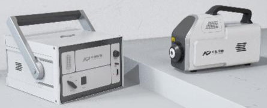
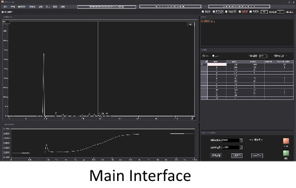
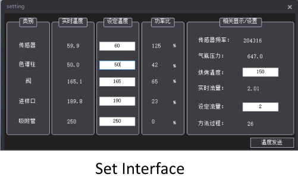
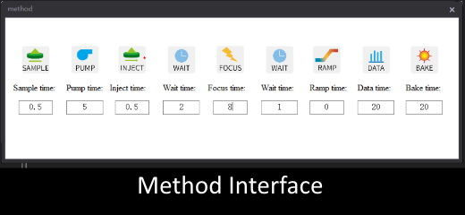
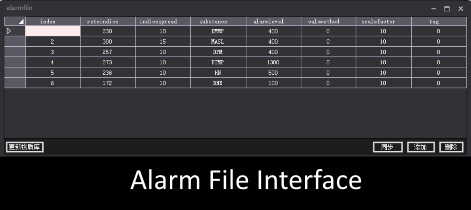

Solafact 2000
Product Introduction

The Solafact 2000 High-Sensitivity Rapid Gas Chromatography Analyzer is designed for quantitative detection of ppb to ppm level gaseous (or vapor) chemicals. This instrument is based on fast gas chromatography analysis technology and utilizes highly sensitive surface acoustic wave sensors. It features high detection sensitivity, low measurement error, short detection times, good repeatability, and high reliability. Users can add databases to enable broad-spectrum measurements of various substances. The instrument employs ultra-high sensitivity surface acoustic wave sensors, which react to the concentration characteristics of substances by causing frequency changes on the sensor crystal surface as the substance flows through. After each analysis, the instrument can be cleaned using high-temperature baking to ensure the accuracy of the next analysis. The instrument provides various portable accessories, making it an ideal choice for both laboratory andon-site testing environments.
Features
Extremely high detection sensitivity, down to 1 ppb.
Ultra-fast chromatographic separation technology, capable of achieving chromatographic separation within 10 to 30 seconds.
Quantitative detection.
Simple operation.
Strong interference resistance, suitable for various application scenarios.
Technical Specifications
Performance Parameters
ppb-ppm(most compounds are in the ppb range)
105
Parameter Name
Measurement
Dynamic Range
1~60 s
Detection Limit
2.9ppb (nitrobenzene aqueous solution)
Response Time
Accuracy
Better than 10%
Repeatability Error
Better than 5% RSD
Adsorption Tube
TENAX TA filler (can be selected based on the target substance)
Detector
0-150℃ (temperature control)
Analytical Sample
gas, liquid, and soil samples
Main Unit Size
344* 326* 218mm
Probe Size
340* 124* 186mm
Software Introduction:
It can be widely used in anti-drug, customs, public security, security inspection, pharmaceuticals, industrial quality control, fire hazard inspection, mail/express inspection, food safety and other fields.
Key Features:
Supports serial port/WIFI communication, offering high adaptability to various usage scenarios. Allows users to modify or customize methods to meet experimental requirements or use default methods for straightforward testing. Permits users to adjust temperature and flow settings to enhance sensitivity or peak separation to meet more demanding experimental requirements. Supports users in adding, modifying, deleting, and querying substances in the substance library. Supports data storage and retrieval, as well as automatic data saving and screen shot capture.

Application Fields:
It can be widely used in various fields, including chemical agents,drugs, explosives, water quality, food testing, and more.
Software Introduction:
Software Introduction:
It can be widely used in anti-drug, customs, public security, security inspection, pharmaceuticals, industrial quality control, fire hazard inspection, mail/express inspection, food safety and other fields.